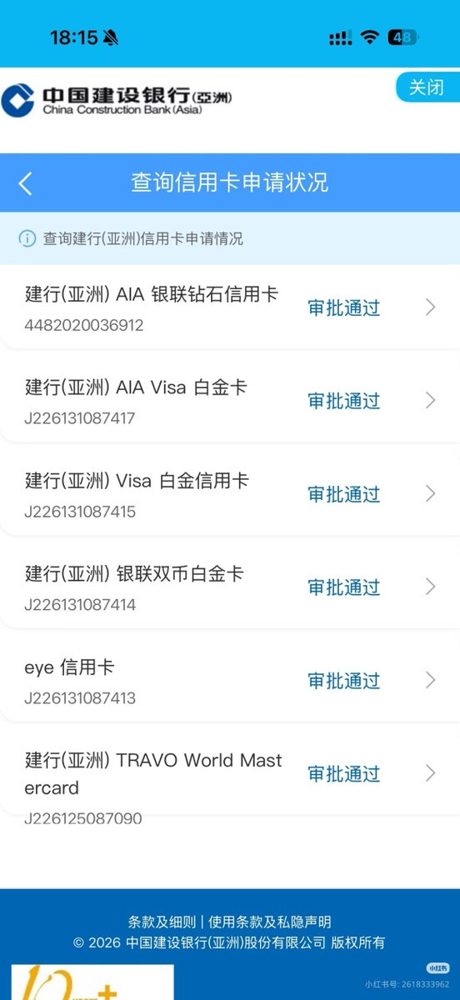
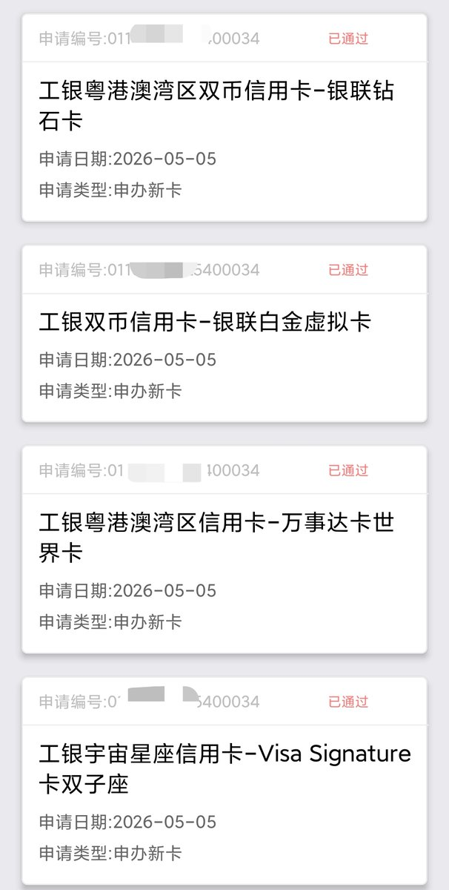
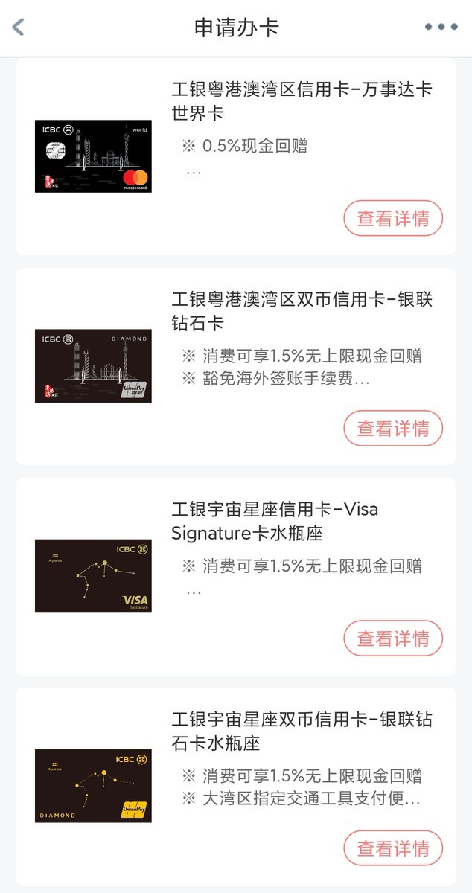
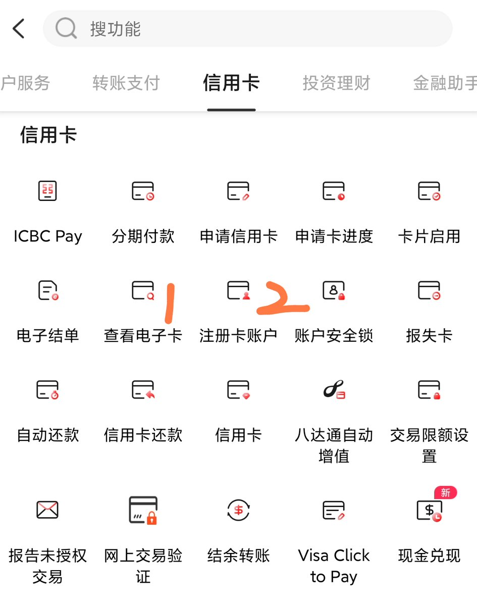
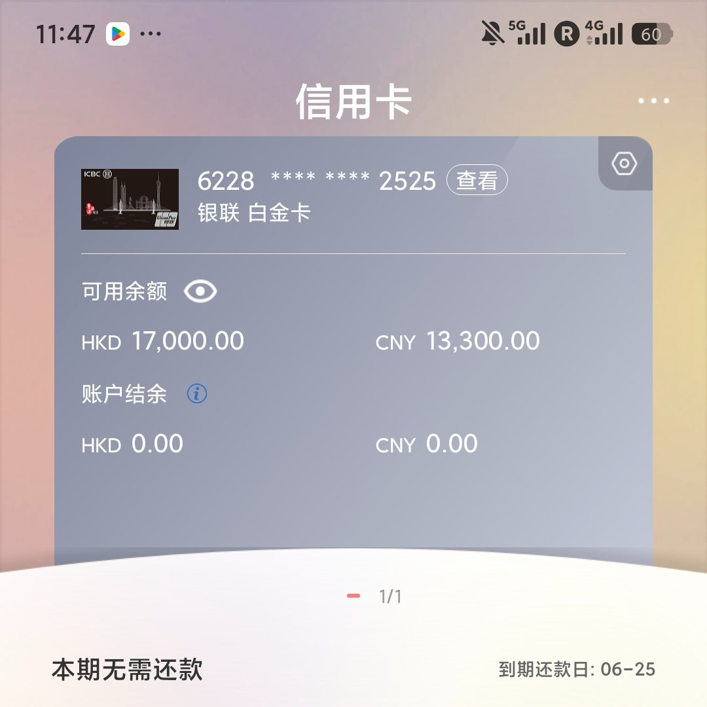

ICBCA下了，准备下周去拿卡的时候顺便开CCBA，说新户定存5w港币/人民币都能5.88%APR三个月
参考了xhs上的帖子（图2、3、4），感觉有用的就只有eye（有ftf货转）和TRAVO，银联感觉跟工亚的GBA水钻不相上下，飞常赏需提前任一卡报名，要求非HKD消费
国内的支付宝和微信是不算迎新的，之前特地刷过，然后电话询问，告知不算合资格
参考了xhs上的帖子（图2、3、4），感觉有用的就只有eye（有ftf货转）和TRAVO，银联感觉跟工亚的GBA水钻不相上下，飞常赏需提前任一卡报名，要求非HKD消费
国内的支付宝和微信是不算迎新的，之前特地刷过，然后电话询问，告知不算合资格




